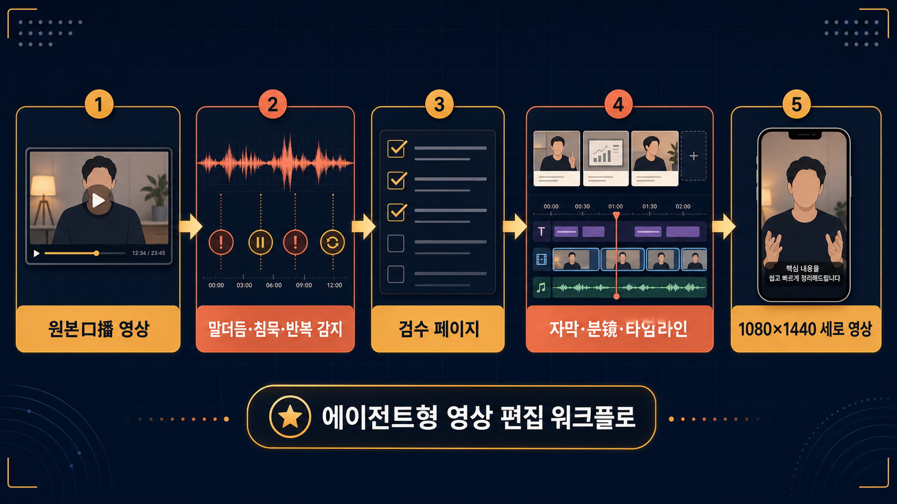

GitHub Repository Infographic Report
AI 에이전트가
口播 영상 편집을
따라 하게 만드는 Skill 패키지
Agentchengfeng/chengfeng-videocut-skills는 말하는 영상의 전처리, 검수, 분镜, 타임라인 미리보기, 세로 영상 출력까지를 Agent가 읽을 수 있는 절차와 산출물로 정리한 저장소입니다.
무엇을 도와주나?
일반 편집툴을 대체하려는 저장소가 아니라, 口播/튜토리얼/제품 설명 영상처럼 반복되는 편집 판단을 Agent 작업 단위로 쪼개는 데 초점이 있습니다.
🎬원본 영상
녹화·口播
녹화·口播
〰️오류 탐지
침묵·반복·말더듬
침묵·반복·말더듬
✅검수 페이지
사람 확인
사람 확인
🧩분镜·타임라인
장면 설계
장면 설계
📱세로 영상
1080×1440
1080×1440
핵심 Skill 3종
剪口播원본 영상을 전사하고, 말더듬·반복·침묵 후보를 검출한 뒤 검수 페이지를 통해 컷 편집용 기초 소재를 만듭니다.
口播成片잘린 영상과 자막, 선택 소재를 바탕으로 분镜 페이지·시간선 미리보기·최종 1080×1440 MP4 흐름을 구성합니다.
自进化사용자의 피드백과 실패 사례를 규칙으로 흡수해 다음 편집 작업에서 같은 실수를 줄이는 메타 Skill입니다.
누구에게 유용한가?
AI 에이전트로 영상 제작을 자동화하려는 팀작업 지시를 코드/문서/HTML 산출물로 남기려는 워크플로에 잘 맞습니다.
口播 기반 숏폼·튜토리얼 제작자소스 영상, 자막, 화면 자료를 결합해 검수 가능한 중간 결과물을 만들고 싶은 경우 유용합니다.
Claude Code / Codex Skill 사용자설치형 npm 패키지와 Skills 구조가 있어 에이전트 작업환경에 붙여 시험하기 쉽습니다.
도입 전 확인할 점
강점
- 검수 페이지와 타임라인 미리보기 중심이라 사람이 중간 판단을 넣기 좋음
- 영상 편집을 “Agent가 읽고 수정 가능한 산출물 계약”으로 바꿔 둠
- Apache-2.0 라이선스라 재사용·개조 여지가 큼
주의
- 범용 영상 편집기가 아니라 口播 영상에 특화됨
- 화산엔진 음성 인식 API Key와 FFmpeg/Node.js 환경이 필요함
- 실제 품질은 자막 정확도와 검수 루프 운영 방식에 크게 좌우됨
저장소 신호
관심도2,187 stars, 315 forks, open issues 19개로 초기 관심도가 높은 편입니다.
구성34개 파일 · 코드 2,353라인 · 문서/템플릿/스크립트 혼합형. README와 Skill 문서가 핵심이며, JS/Bash 스크립트가 실행을 보조합니다.
배포npm 설치기
chengfeng-videocut-skills가 있으며 Node.js >=18 환경을 요구합니다.추천 결론
바로 프로덕션 자동화에 넣기보다는, 1~2개의 실제 口播 샘플로 “검수 페이지 → 자막 재생성 → 분镜/타임라인 → 세로 영상” 루프가 원하는 품질로 도는지 검증하는 방식이 적절합니다. 특히 교육·제품 설명·결과 공유형 영상처럼 구조가 반복되는 콘텐츠에서 가치가 큽니다.